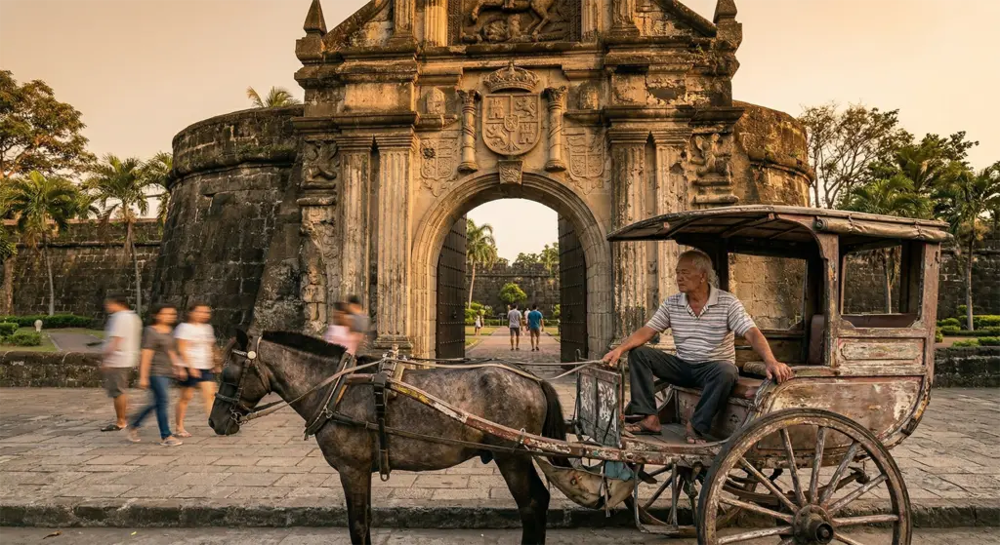
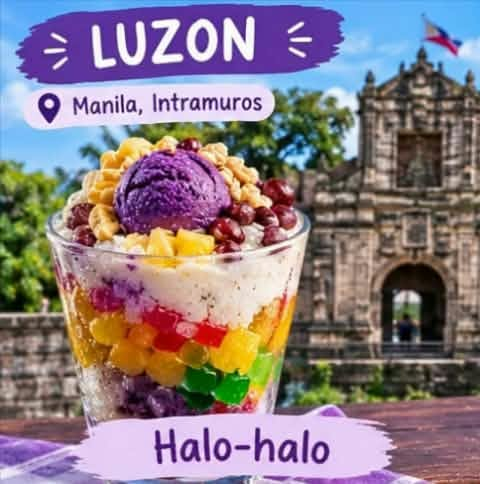

LUZON
Manila, Intramuros
Halo-halo
The historic Walled City of Manila, filled with cobblestone streets, heritage churches, and the story of Dr. Jose Rizal. It is the old soul of Manila.
Food: Halo-halo is the ultimate Filipino summer cooler, a colorful mix of shaved ice, beans, nata de coco, ube, leche flan, sago, and ice cream.